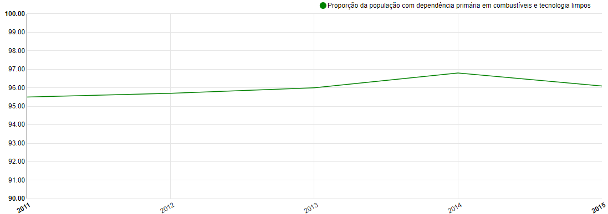

ODS 7 - Energia Limpa e Acessível
O ODS 7, Energia Limpa e Acessível, é um dos 17 Objetivos de Desenvolvimento Sustentável das Nações Unidas. Este objetivo é fundamental para o desenvolvimento sustentável global e visa garantir que todos tenham acesso a energia de qualidade sem prejudicar o meio ambiente.
- Acesso Universal à Energia: Um dos principais objetivos da ODS 7 é garantir o acesso universal a fontes de energia moderna, acessível e confiável. Isso significa que todas as pessoas em todo o mundo devem ter acesso a serviços de energia seguros e sustentáveis.
- Aumento da Eficiência Energética: A ODS 7 também se concentra na melhoria da eficiência energética em todos os setores, incluindo indústria, transporte, agricultura e construção. Isso ajuda a reduzir o desperdício de energia e as emissões de gases de efeito estufa.
- Aumento da Participação de Energias Renováveis: A promoção de energias renováveis, como solar, eólica e hidrelétrica, é fundamental para alcançar a ODS 7. Isso não apenas reduz a dependência de combustíveis fósseis, mas também contribui para a redução das emissões de carbono.
- Apoio à Pesquisa e Inovação em Energia Limpa: Muitos esforços estão sendo feitos para impulsionar a pesquisa e a inovação em tecnologias de energia limpa. Isso inclui o desenvolvimento de baterias mais eficientes, tecnologias de armazenamento de energia e métodos avançados de geração de energia.
- Universalização de Serviços de Energia Sustentável em Comunidades Rurais: Muitas pessoas em áreas rurais ainda não têm acesso à eletricidade confiável. A ODS 7 visa garantir que essas comunidades também se beneficiem de fontes de energia limpa e confiável.
- Políticas e Regulamentações: Governos desempenham um papel fundamental na consecução da ODS 7, implementando políticas e regulamentações que incentivam a energia limpa, promovem a eficiência energética e garantem que a energia seja acessível a todos.
- Parcerias Globais: A cooperação internacional é crucial para alcançar essa meta. Muitos países e organizações trabalham juntos para compartilhar tecnologia e recursos na busca por soluções de energia limpa.
- Monitoramento e Prestação de Contas: A ONU monitora o progresso em relação a todas as ODS, incluindo a ODS 7, e relatórios periódicos destacam os avanços e desafios em direção a essas metas.
Percentagem da população com acesso à eletricidade
Objetivo: Energia limpa e acessível
Análise GeográficaMeta: Até 2030, assegurar o acesso universal, confiável, moderno e a preços acessíveis a serviços de energia
Indicador: Percentagem da população com acesso à eletricidade
Conceitos e Definições: Proporção da população que tem acesso à eletricidade em seus domicílios. O acesso à eletricidade aborda questões críticas importantes em todas as dimensões do desenvolvimento sustentável, envolvendo uma ampla gama de impactos sociais e econômicos, incluindo a facilitação do desenvolvimento de atividades geradoras de renda baseadas no domicílio e o alívio da carga das tarefas domésticas.
Percentagem da população com acesso primário a combustíveis e tecnologias limpos
Objetivo: Energia limpa e acessível
Análise GeográficaMeta: Até 2030, assegurar o acesso universal, confiável, moderno e a preços acessíveis a serviços de energia
Indicador: Percentagem da população com acesso primário a combustíveis e tecnologias limpos
Conceitos e Definições: É o percentual das pessoas que utilizam combustíveis e tecnologias limpas para cozimento, aquecimento e iluminação em relação ao total da população que reportou essa informação. O termo “limpo” refere-se àqueles combustíveis e/ou tecnologias que possuem metas de utilização ou recomendações específicas (como carvão, lenha e querosene) de acordo com a normativa da OMS (Organização Mundial da Saúde) para qualidade do ar doméstico, com relação à combustão doméstica de combustíveis. No caso do Brasil, a utilização doméstica de combustíveis só é estatisticamente relevante para cocção, não sendo levados em consideração aqueles utilizados para aquecimento e iluminação. Pela PNAD, até 2015, os seguintes combustíveis eram disponibilizados para que o entrevistado marcasse aquele de uso predominante: 1 - Gás de botijão, quando o fogão utiliza gás liquefeito de petróleo, comumente chamado gás engarrafado ou de botijão; 2 - Gás canalizado, quando o fogão utiliza gás canalizado, também chamado de gás encanado ou de rua; 3 - Lenha, quando o fogão utiliza madeira, folha ou casca de vegetais; 4 - Carvão, quando o fogão utiliza carvão vegetal ou mineral; 5 - Energia elétrica, quando o fogão utiliza energia elétrica; 6 - Outro combustível, quando o fogão utiliza combustível distinto dos anteriores (querosene, óleo, álcool etc.).
Para alcançar o ODS 7, é necessário um esforço conjunto de governos, empresas e indivíduos. A transição para uma energia limpa e acessível é fundamental para o futuro do nosso planeta e o bem-estar das gerações futuras.
Saiba mais